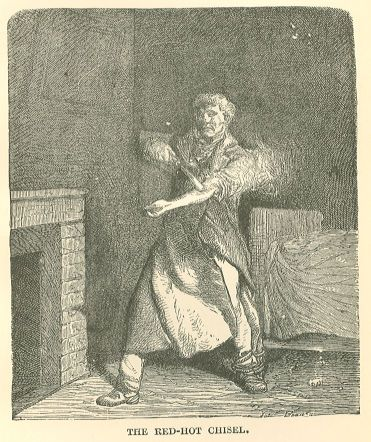
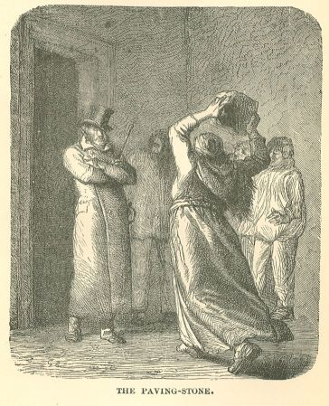
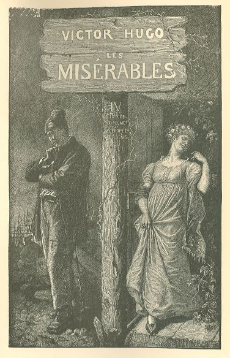
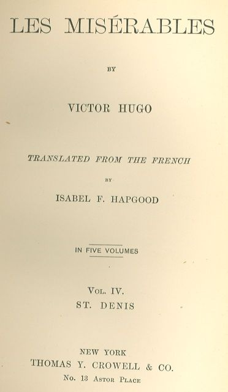

Les Misérables

Marius reeled in utter horror, the very ruffians shuddered, hardly a muscle of the
old man's face contracted, and while the red-hot iron sank into the smoking wound,
impassive and almost august, he fixed on Thenardier his beautiful glance, in which
there was no hatred, and where suffering vanished in serene majesty.
With grand and lofty natures, the revolts of the flesh and the senses when subjected
to physical suffering cause the soul to spring forth, and make it appear on the brow,
just as rebellions among the soldiery force the captain to show himself.
"Wretches!" said he, "have no more fear of me than I have for you!"
And, tearing the chisel from the wound, he hurled it through the window, which had
been left open; the horrible, glowing tool disappeared into the night, whirling as
it flew, and fell far away on the snow.
The prisoner resumed:—
"Do what you please with me." He was disarmed.
"Seize him!" said Thenardier.
Two of the ruffians laid their hands on his shoulder, and the masked man with the
ventriloquist's voice took up his station in front of him, ready to smash his skull
at the slightest movement.
At the same time, Marius heard below him, at the base of the partition, but so near
that he could not see who was speaking, this colloquy conducted in a low tone:—
"There is only one thing left to do."
"Cut his throat."
"That's it."
It was the husband and wife taking counsel together.
Thenardier walked slowly towards the table, opened the drawer, and took out the knife.
Marius fretted with the handle of his pistol. Unprecedented perplexity! For the last
hour he had had two voices in his conscience, the one enjoining him to respect his
father's testament, the other crying to him to rescue the prisoner. These two voices
continued uninterruptedly that struggle which tormented him to agony. Up to that moment
he had cherished a vague hope that he should find some means of reconciling these
two duties, but nothing within the limits of possibility had presented itself.
However, the peril was urgent, the last bounds of delay had been reached; Thenardier
was standing thoughtfully a few paces distant from the prisoner.
Marius cast a wild glance about him, the last mechanical resource of despair. All
at once a shudder ran through him.
At his feet, on the table, a bright ray of light from the full moon illuminated and
seemed to point out to him a sheet of paper. On this paper he read the following line
written that very morning, in large letters, by the eldest of the Thenardier girls:—
"THE BOBBIES ARE HERE."
An idea, a flash, crossed Marius' mind; this was the expedient of which he was in
search, the solution of that frightful problem which was torturing him, of sparing
the assassin and saving the victim.
He knelt down on his commode, stretched out his arm, seized the sheet of paper, softly
detached a bit of plaster from the wall, wrapped the paper round it, and tossed the
whole through the crevice into the middle of the den.
It was high time. Thenardier had conquered his last fears or his last scruples, and
was advancing on the prisoner.
"Something is falling!" cried the Thenardier woman.
"What is it?" asked her husband.
The woman darted forward and picked up the bit of plaster. She handed it to her husband.
"Where did this come from?" demanded Thenardier.
"Pardie!" ejaculated his wife, "where do you suppose it came from? Through the window,
of course."
"I saw it pass," said Bigrenaille.
Thenardier rapidly unfolded the paper and held it close to the candle.
"It's in Eponine's handwriting. The devil!"
He made a sign to his wife, who hastily drew near, and showed her the line written
on the sheet of paper, then he added in a subdued voice:—
"Quick! The ladder! Let's leave the bacon in the mousetrap and decamp!"
"Without cutting that man's throat?" asked, the Thenardier woman.
"We haven't the time."
"Through what?" resumed Bigrenaille.
"Through the window," replied Thenardier. "Since Ponine has thrown the stone through
the window, it indicates that the house is not watched on that side."
The mask with the ventriloquist's voice deposited his huge key on the floor, raised
both arms in the air, and opened and clenched his fists, three times rapidly without
uttering a word.
This was the signal like the signal for clearing the decks for action on board ship.
The ruffians who were holding the prisoner released him; in the twinkling of an eye
the rope ladder was unrolled outside the window, and solidly fastened to the sill
by the two iron hooks.
The prisoner paid no attention to what was going on around him. He seemed to be dreaming
or praying.
As soon as the ladder was arranged, Thenardier cried:
"Come! the bourgeoise first!"
And he rushed headlong to the window.
But just as he was about to throw his leg over, Bigrenaille seized him roughly by
the collar.
"Not much, come now, you old dog, after us!"
"After us!" yelled the ruffians.
"You are children," said Thenardier, "we are losing time. The police are on our heels."
"Well," said the ruffians, "let's draw lots to see who shall go down first."
Thenardier exclaimed:—
"Are you mad! Are you crazy! What a pack of boobies! You want to waste time, do you?
Draw lots, do you? By a wet finger, by a short straw! With written names! Thrown into
a hat!—"
"Would you like my hat?" cried a voice on the threshold.
All wheeled round. It was Javert.
He had his hat in his hand, and was holding it out to them with a smile.
CHAPTER XXI—ONE SHOULD ALWAYS BEGIN BY ARRESTING THE VICTIMS
At nightfall, Javert had posted his men and had gone into ambush himself between the
trees of the Rue de la Barrière-des-Gobelins which faced the Gorbeau house, on the
other side of the boulevard. He had begun operations by opening "his pockets," and
dropping into it the two young girls who were charged with keeping a watch on the
approaches to the den. But he had only "caged" Azelma. As for Eponine, she was not
at her post, she had disappeared, and he had not been able to seize her. Then Javert
had made a point and had bent his ear to waiting for the signal agreed upon. The comings
and goings of the fiacres had greatly agitated him. At last, he had grown impatient,
and, sure that there was a nest there, sure of being in "luck," having recognized
many of the ruffians who had entered, he had finally decided to go upstairs without
waiting for the pistol-shot.
It will be remembered that he had Marius' pass-key.
He had arrived just in the nick of time.
The terrified ruffians flung themselves on the arms which they had abandoned in all
the corners at the moment of flight. In less than a second, these seven men, horrible
to behold, had grouped themselves in an attitude of defence, one with his meat-axe,
another with his key, another with his bludgeon, the rest with shears, pincers, and
hammers. Thenardier had his knife in his fist. The Thenardier woman snatched up an
enormous paving-stone which lay in the angle of the window and served her daughters
as an ottoman.

Javert put on his hat again, and advanced a couple of paces into the room, with arms
folded, his cane under one arm, his sword in its sheath.
"Halt there," said he. "You shall not go out by the window, you shall go through the
door. It's less unhealthy. There are seven of you, there are fifteen of us. Don't
let's fall to collaring each other like men of Auvergne."
Bigrenaille drew out a pistol which he had kept concealed under his blouse, and put
it in Thenardier's hand, whispering in the latter's ear:—
"It's Javert. I don't dare fire at that man. Do you dare?"
"Parbleu!" replied Thenardier.
"Well, then, fire."
Thenardier took the pistol and aimed at Javert.
Javert, who was only three paces from him, stared intently at him and contented himself
with saying:—
"Come now, don't fire. You'll miss fire."
Thenardier pulled the trigger. The pistol missed fire.
"Didn't I tell you so!" ejaculated Javert.
Bigrenaille flung his bludgeon at Javert's feet.
"You're the emperor of the fiends! I surrender."
"And you?" Javert asked the rest of the ruffians.
They replied:—
"So do we."
Javert began again calmly:—
"That's right, that's good, I said so, you are nice fellows."
"I only ask one thing," said Bigrenaille, "and that is, that I may not be denied tobacco
while I am in confinement."
"Granted," said Javert.
And turning round and calling behind him:—
"Come in now!"
A squad of policemen, sword in hand, and agents armed with bludgeons and cudgels,
rushed in at Javert's summons. They pinioned the ruffians.
This throng of men, sparely lighted by the single candle, filled the den with shadows.
"Handcuff them all!" shouted Javert.
"Come on!" cried a voice which was not the voice of a man, but of which no one would
ever have said: "It is a woman's voice."
The Thenardier woman had entrenched herself in one of the angles of the window, and
it was she who had just given vent to this roar.
The policemen and agents recoiled.
She had thrown off her shawl, but retained her bonnet; her husband, who was crouching
behind her, was almost hidden under the discarded shawl, and she was shielding him
with her body, as she elevated the paving-stone above her head with the gesture of
a giantess on the point of hurling a rock.
"Beware!" she shouted.
All crowded back towards the corridor. A broad open space was cleared in the middle
of the garret.
The Thenardier woman cast a glance at the ruffians who had allowed themselves to be
pinioned, and muttered in hoarse and guttural accents:—
"The cowards!"
Javert smiled, and advanced across the open space which the Thenardier was devouring
with her eyes.
"Don't come near me," she cried, "or I'll crush you."
"What a grenadier!" ejaculated Javert; "you've got a beard like a man, mother, but
I have claws like a woman."
And he continued to advance.
The Thenardier, dishevelled and terrible, set her feet far apart, threw herself backwards,
and hurled the paving-stone at Javert's head. Javert ducked, the stone passed over
him, struck the wall behind, knocked off a huge piece of plastering, and, rebounding
from angle to angle across the hovel, now luckily almost empty, rested at Javert's
feet.
At the same moment, Javert reached the Thenardier couple. One of his big hands descended
on the woman's shoulder; the other on the husband's head.
"The handcuffs!" he shouted.
The policemen trooped in in force, and in a few seconds Javert's order had been executed.
The Thenardier female, overwhelmed, stared at her pinioned hands, and at those of
her husband, who had dropped to the floor, and exclaimed, weeping:—
"My daughters!"
"They are in the jug," said Javert.
In the meanwhile, the agents had caught sight of the drunken man asleep behind the
door, and were shaking him:—
He awoke, stammering:—
"Is it all over, Jondrette?"
"Yes," replied Javert.
The six pinioned ruffians were standing, and still preserved their spectral mien;
all three besmeared with black, all three masked.
"Keep on your masks," said Javert.
And passing them in review with a glance of a Frederick II. at a Potsdam parade, he
said to the three "chimney-builders":—
"Good day, Bigrenaille! good day, Brujon! good day, Deuxmilliards!"
Then turning to the three masked men, he said to the man with the meat-axe:—
"Good day, Gueulemer!"
And to the man with the cudgel:—
"Good day, Babet!"
And to the ventriloquist:—
"Your health, Claquesous."
At that moment, he caught sight of the ruffians' prisoner, who, ever since the entrance
of the police, had not uttered a word, and had held his head down.
"Untie the gentleman!" said Javert, "and let no one go out!"
That said, he seated himself with sovereign dignity before the table, where the candle
and the writing-materials still remained, drew a stamped paper from his pocket, and
began to prepare his report.
When he had written the first lines, which are formulas that never vary, he raised
his eyes:—
"Let the gentleman whom these gentlemen bound step forward."
The policemen glanced round them.
"Well," said Javert, "where is he?"
The prisoner of the ruffians, M. Leblanc, M. Urbain Fabre, the father of Ursule or
the Lark, had disappeared.
The door was guarded, but the window was not. As soon as he had found himself released
from his bonds, and while Javert was drawing up his report, he had taken advantage
of confusion, the crowd, the darkness, and of a moment when the general attention
was diverted from him, to dash out of the window.
An agent sprang to the opening and looked out. He saw no one outside.
The rope ladder was still shaking.
"The devil!" ejaculated Javert between his teeth, "he must have been the most valuable
of the lot."
CHAPTER XXII—THE LITTLE ONE WHO WAS CRYING IN VOLUME TWO
On the day following that on which these events took place in the house on the Boulevard
de l'Hopital, a child, who seemed to be coming from the direction of the bridge of
Austerlitz, was ascending the side-alley on the right in the direction of the Barriere
de Fontainebleau.
Night had fully come.
This lad was pale, thin, clad in rags, with linen trousers in the month of February,
and was singing at the top of his voice.
At the corner of the Rue du Petit-Banquier, a bent old woman was rummaging in a heap
of refuse by the light of a street lantern; the child jostled her as he passed, then
recoiled, exclaiming:—
"Hello! And I took it for an enormous, enormous dog!"
He pronounced the word enormous the second time with a jeering swell of the voice
which might be tolerably well represented by capitals: "an enormous, ENORMOUS dog."
The old woman straightened herself up in a fury.
"Nasty brat!" she grumbled. "If I hadn't been bending over, I know well where I would
have planted my foot on you."
The boy was already far away.
"Kisss! kisss!" he cried. "After that, I don't think I was mistaken!"
The old woman, choking with indignation, now rose completely upright, and the red
gleam of the lantern fully lighted up her livid face, all hollowed into angles and
wrinkles, with crow's-feet meeting the corners of her mouth.
Her body was lost in the darkness, and only her head was visible. One would have pronounced
her a mask of Decrepitude carved out by a light from the night.
The boy surveyed her.
"Madame," said he, "does not possess that style of beauty which pleases me."
He then pursued his road, and resumed his song:—
"Le roi Coupdesabot
S'en allait à la chasse,
A la chasse aux corbeaux—"
S'en allait à la chasse,
A la chasse aux corbeaux—"
At the end of these three lines he paused. He had arrived in front of No. 50-52, and
finding the door fastened, he began to assault it with resounding and heroic kicks,
which betrayed rather the man's shoes that he was wearing than the child's feet which
he owned.
In the meanwhile, the very old woman whom he had encountered at the corner of the
Rue du Petit-Banquier hastened up behind him, uttering clamorous cries and indulging
in lavish and exaggerated gestures.
"What's this? What's this? Lord God! He's battering the door down! He's knocking the
house down."
The kicks continued.
The old woman strained her lungs.
"Is that the way buildings are treated nowadays?"
All at once she paused.
She had recognized the gamin.
"What! so it's that imp!"
"Why, it's the old lady," said the lad. "Good day, Bougonmuche. I have come to see
my ancestors."
The old woman retorted with a composite grimace, and a wonderful improvisation of
hatred taking advantage of feebleness and ugliness, which was, unfortunately, wasted
in the dark:—
"There's no one here."
"Bah!" retorted the boy, "where's my father?"
"At La Force."
"Come, now! And my mother?"
"At Saint-Lazare."
"Well! And my sisters?"
"At the Madelonettes."
The lad scratched his head behind his ear, stared at Ma'am Bougon, and said:—
"Ah!"
Then he executed a pirouette on his heel; a moment later, the old woman, who had remained
on the door-step, heard him singing in his clear, young voice, as he plunged under
the black elm-trees, in the wintry wind:—
"Le roi Coupdesabot31 S'en allait à la chasse,
A la chasse aux corbeaux,
Monté sur deux échasses.
Quand on passait dessous,
On lui payait deux sous."
A la chasse aux corbeaux,
Monté sur deux échasses.
Quand on passait dessous,
On lui payait deux sous."
VOLUME IV.—SAINT-DENIS.


BOOK FIRST.—A FEW PAGES OF HISTORY
CHAPTER I—WELL CUT
1831 and 1832, the two years which are immediately connected with the Revolution of
July, form one of the most peculiar and striking moments of history. These two years
rise like two mountains midway between those which precede and those which follow
them. They have a revolutionary grandeur. Precipices are to be distinguished there.
The social masses, the very assizes of civilization, the solid group of superposed
and adhering interests, the century-old profiles of the ancient French formation,
appear and disappear in them every instant, athwart the storm clouds of systems, of
passions, and of theories. These appearances and disappearances have been designated
as movement and resistance. At intervals, truth, that daylight of the human soul,
can be descried shining there.
This remarkable epoch is decidedly circumscribed and is beginning to be sufficiently
distant from us to allow of our grasping the principal lines even at the present day.
We shall make the attempt.
The Restoration had been one of those intermediate phases, hard to define, in which
there is fatigue, buzzing, murmurs, sleep, tumult, and which are nothing else than
the arrival of a great nation at a halting-place.
These epochs are peculiar and mislead the politicians who desire to convert them to
profit. In the beginning, the nation asks nothing but repose; it thirsts for but one
thing, peace; it has but one ambition, to be small. Which is the translation of remaining
tranquil. Of great events, great hazards, great adventures, great men, thank God,
we have seen enough, we have them heaped higher than our heads. We would exchange
Caesar for Prusias, and Napoleon for the King of Yvetot. "What a good little king
was he!" We have marched since daybreak, we have reached the evening of a long and
toilsome day; we have made our first change with Mirabeau, the second with Robespierre,
the third with Bonaparte; we are worn out. Each one demands a bed.
Devotion which is weary, heroism which has grown old, ambitions which are sated, fortunes
which are made, seek, demand, implore, solicit, what? A shelter. They have it. They
take possession of peace, of tranquillity, of leisure; behold, they are content. But,
at the same time certain facts arise, compel recognition, and knock at the door in
their turn. These facts are the products of revolutions and wars, they are, they exist,
they have the right to install themselves in society, and they do install themselves
therein; and most of the time, facts are the stewards of the household and fouriers32 who do nothing but prepare lodgings for principles.
This, then, is what appears to philosophical politicians:—
At the same time that weary men demand repose, accomplished facts demand guarantees.
Guarantees are the same to facts that repose is to men.
This is what England demanded of the Stuarts after the Protector; this is what France
demanded of the Bourbons after the Empire.
These guarantees are a necessity of the times. They must be accorded. Princes "grant"
them, but in reality, it is the force of things which gives them. A profound truth,
and one useful to know, which the Stuarts did not suspect in 1662 and which the Bourbons
did not even obtain a glimpse of in 1814.
The predestined family, which returned to France when Napoleon fell, had the fatal
simplicity to believe that it was itself which bestowed, and that what it had bestowed
it could take back again; that the House of Bourbon possessed the right divine, that
France possessed nothing, and that the political right conceded in the charter of
Louis XVIII. was merely a branch of the right divine, was detached by the House of
Bourbon and graciously given to the people until such day as it should please the
King to reassume it. Still, the House of Bourbon should have felt, from the displeasure
created by the gift, that it did not come from it.
This house was churlish to the nineteenth century. It put on an ill-tempèred look
at every development of the nation. To make use of a trivial word, that is to say,
of a popular and a true word, it looked glum. The people saw this.
It thought it possessed strength because the Empire had been carried away before it
like a theatrical stage-setting. It did not perceive that it had, itself, been brought
in in the same fashion. It did not perceive that it also lay in that hand which had
removed Napoleon.
It thought that it had roots, because it was the past. It was mistaken; it formed
a part of the past, but the whole past was France. The roots of French society were
not fixed in the Bourbons, but in the nations. These obscure and lively roots constituted,
not the right of a family, but the history of a people. They were everywhere, except
under the throne.
The House of Bourbon was to France the illustrious and bleeding knot in her history,
but was no longer the principal element of her destiny, and the necessary base of
her politics. She could get along without the Bourbons; she had done without them
for two and twenty years; there had been a break of continuity; they did not suspect
the fact. And how should they have suspected it, they who fancied that Louis XVII.
reigned on the 9th of Thermidor, and that Louis XVIII. was reigning at the battle
of Marengo? Never, since the origin of history, had princes been so blind in the presence
of facts and the portion of divine authority which facts contain and promulgate. Never
had that pretension here below which is called the right of kings denied to such a
point the right from on high.
A capital error which led this family to lay its hand once more on the guarantees
"granted" in 1814, on the concessions, as it termed them. Sad. A sad thing! What it
termed its concessions were our conquests; what it termed our encroachments were our
rights.
When the hour seemed to it to have come, the Restoration, supposing itself victorious
over Bonaparte and well-rooted in the country, that is to say, believing itself to
be strong and deep, abruptly decided on its plan of action, and risked its stroke.
One morning it drew itself up before the face of France, and, elevating its voice,
it contested the collective title and the individual right of the nation to sovereignty,
of the citizen to liberty. In other words, it denied to the nation that which made
it a nation, and to the citizen that which made him a citizen.
This is the foundation of those famous acts which are called the ordinances of July.
The Restoration fell.
It fell justly. But, we admit, it had not been absolutely hostile to all forms of
progress. Great things had been accomplished, with it alongside.
Under the Restoration, the nation had grown accustomed to calm discussion, which had
been lacking under the Republic, and to grandeur in peace, which had been wanting
under the Empire. France free and strong had offered an encouraging spectacle to the
other peoples of Europe. The Revolution had had the word under Robespierre; the cannon
had had the word under Bonaparte; it was under Louis XVIII. and Charles X. that it
was the turn of intelligence to have the word. The wind ceased, the torch was lighted
once more. On the lofty heights, the pure light of mind could be seen flickering.
A magnificent, useful, and charming spectacle. For a space of fifteen years, those
great principles which are so old for the thinker, so new for the statesman, could
be seen at work in perfect peace, on the public square; equality before the law, liberty
of conscience, liberty of speech, liberty of the press, the accessibility of all aptitudes
to all functions. Thus it proceeded until 1830. The Bourbons were an instrument of
civilization which broke in the hands of Providence.
The fall of the Bourbons was full of grandeur, not on their side, but on the side
of the nation. They quitted the throne with gravity, but without authority; their
descent into the night was not one of those solemn disappearances which leave a sombre
emotion in history; it was neither the spectral calm of Charles I., nor the eagle
scream of Napoleon. They departed, that is all. They laid down the crown, and retained
no aureole. They were worthy, but they were not august. They lacked, in a certain
measure, the majesty of their misfortune. Charles X. during the voyage from Cherbourg,
causing a round table to be cut over into a square table, appeared to be more anxious
about imperilled etiquette than about the crumbling monarchy. This diminution saddened
devoted men who loved their persons, and serious men who honored their race. The populace
was admirable. The nation, attacked one morning with weapons, by a sort of royal insurrection,
felt itself in the possession of so much force that it did not go into a rage. It
defended itself, restrained itself, restored things to their places, the government
to law, the Bourbons to exile, alas! and then halted! It took the old king Charles
X. from beneath that dais which had sheltered Louis XIV. and set him gently on the
ground. It touched the royal personages only with sadness and precaution. It was not
one man, it was not a few men, it was France, France entire, France victorious and
intoxicated with her victory, who seemed to be coming to herself, and who put into
practice, before the eyes of the whole world, these grave words of Guillaume du Vair
after the day of the Barricades:—
"It is easy for those who are accustomed to skim the favors of the great, and to spring,
like a bird from bough to bough, from an afflicted fortune to a flourishing one, to
show themselves harsh towards their Prince in his adversity; but as for me, the fortune
of my Kings and especially of my afflicted Kings, will always be venerable to me."
The Bourbons carried away with them respect, but not regret. As we have just stated,
their misfortune was greater than they were. They faded out in the horizon.
The Revolution of July instantly had friends and enemies throughout the entire world.
The first rushed toward her with joy and enthusiasm, the others turned away, each
according to his nature. At the first blush, the princes of Europe, the owls of this
dawn, shut their eyes, wounded and stupefied, and only opened them to threaten. A
fright which can be comprehended, a wrath which can be pardoned. This strange revolution
had hardly produced a shock; it had not even paid to vanquished royalty the honor
of treating it as an enemy, and of shedding its blood. In the eyes of despotic governments,
who are always interested in having liberty calumniate itself, the Revolution of July
committed the fault of being formidable and of remaining gentle. Nothing, however,
was attempted or plotted against it. The most discontented, the most irritated, the
most trembling, saluted it; whatever our egotism and our rancor may be, a mysterious
respect springs from events in which we are sensible of the collaboration of some
one who is working above man.
The Revolution of July is the triumph of right overthrowing the fact. A thing which
is full of splendor.
Right overthrowing the fact. Hence the brilliancy of the Revolution of 1830, hence,
also, its mildness. Right triumphant has no need of being violent.
Right is the just and the true.
The property of right is to remain eternally beautiful and pure. The fact, even when
most necessary to all appearances, even when most thoroughly accepted by contemporaries,
if it exist only as a fact, and if it contain only too little of right, or none at
all, is infallibly destined to become, in the course of time, deformed, impure, perhaps,
even monstrous. If one desires to learn at one blow, to what degree of hideousness
the fact can attain, viewed at the distance of centuries, let him look at Machiavelli.
Machiavelli is not an evil genius, nor a demon, nor a miserable and cowardly writer;
he is nothing but the fact. And he is not only the Italian fact; he is the European
fact, the fact of the sixteenth century. He seems hideous, and so he is, in the presence
of the moral idea of the nineteenth.
This conflict of right and fact has been going on ever since the origin of society.
To terminate this duel, to amalgamate the pure idea with the humane reality, to cause
right to penetrate pacifically into the fact and the fact into right, that is the
task of sages.
CHAPTER II—BADLY SEWED
But the task of sages is one thing, the task of clever men is another. The Revolution
of 1830 came to a sudden halt.
As soon as a revolution has made the coast, the skilful make haste to prepare the
shipwreck.
The skilful in our century have conferred on themselves the title of Statesmen; so
that this word, statesmen, has ended by becoming somewhat of a slang word. It must
be borne in mind, in fact, that wherever there is nothing but skill, there is necessarily
pettiness. To say "the skilful" amounts to saying "the mediocre."
In the same way, to say "statesmen" is sometimes equivalent to saying "traitors."
If, then, we are to believe the skilful, revolutions like the Revolution of July are
severed arteries; a prompt ligature is indispensable. The right, too grandly proclaimed,
is shaken. Also, right once firmly fixed, the state must be strengthened. Liberty
once assured, attention must be directed to power.
Here the sages are not, as yet, separated from the skilful, but they begin to be distrustful.
Power, very good. But, in the first place, what is power? In the second, whence comes
it? The skilful do not seem to hear the murmured objection, and they continue their
manoeuvres.
According to the politicians, who are ingenious in putting the mask of necessity on
profitable fictions, the first requirement of a people after a revolution, when this
people forms part of a monarchical continent, is to procure for itself a dynasty.
In this way, say they, peace, that is to say, time to dress our wounds, and to repair
the house, can be had after a revolution. The dynasty conceals the scaffolding and
covers the ambulance. Now, it is not always easy to procure a dynasty.
If it is absolutely necessary, the first man of genius or even the first man of fortune
who comes to hand suffices for the manufacturing of a king. You have, in the first
case, Napoleon; in the second, Iturbide.
But the first family that comes to hand does not suffice to make a dynasty. There
is necessarily required a certain modicum of antiquity in a race, and the wrinkle
of the centuries cannot be improvised.
If we place ourselves at the point of view of the "statesmen," after making all allowances,
of course, after a revolution, what are the qualities of the king which result from
it? He may be and it is useful for him to be a revolutionary; that is to say, a participant
in his own person in that revolution, that he should have lent a hand to it, that
he should have either compromised or distinguished himself therein, that he should
have touched the axe or wielded the sword in it.
What are the qualities of a dynasty? It should be national; that is to say, revolutionary
at a distance, not through acts committed, but by reason of ideas accepted. It should
be composed of past and be historic; be composed of future and be sympathetic.
All this explains why the early revolutions contented themselves with finding a man,
Cromwell or Napoleon; and why the second absolutely insisted on finding a family,
the House of Brunswick or the House of Orleans.
Royal houses resemble those Indian fig-trees, each branch of which, bending over to
the earth, takes root and becomes a fig-tree itself. Each branch may become a dynasty.
On the sole condition that it shall bend down to the people.
Such is the theory of the skilful.
Here, then, lies the great art: to make a little render to success the sound of a
catastrophe in order that those who profit by it may tremble from it also, to season
with fear every step that is taken, to augment the curve of the transition to the
point of retarding progress, to dull that aurora, to denounce and retrench the harshness
of enthusiasm, to cut all angles and nails, to wad triumph, to muffle up right, to
envelop the giant-people in flannel, and to put it to bed very speedily, to impose
a diet on that excess of health, to put Hercules on the treatment of a convalescent,
to dilute the event with the expedient, to offer to spirits thirsting for the ideal
that nectar thinned out with a potion, to take one's precautions against too much
success, to garnish the revolution with a shade.
1830 practised this theory, already applied to England by 1688.
1830 is a revolution arrested midway. Half of progress, quasi-right. Now, logic knows
not the "almost," absolutely as the sun knows not the candle.
Who arrests revolutions half-way? The bourgeoisie?
Why?
Because the bourgeoisie is interest which has reached satisfaction. Yesterday it was
appetite, to-day it is plenitude, to-morrow it will be satiety.
The phenomenon of 1814 after Napoleon was reproduced in 1830 after Charles X.
The attempt has been made, and wrongly, to make a class of the bourgeoisie. The bourgeoisie
is simply the contented portion of the people. The bourgeois is the man who now has
time to sit down. A chair is not a caste.
But through a desire to sit down too soon, one may arrest the very march of the human
race. This has often been the fault of the bourgeoisie.
One is not a class because one has committed a fault. Selfishness is not one of the
divisions of the social order.
Moreover, we must be just to selfishness. The state to which that part of the nation
which is called the bourgeoisie aspired after the shock of 1830 was not the inertia
which is complicated with indifference and laziness, and which contains a little shame;
it was not the slumber which presupposes a momentary forgetfulness accessible to dreams;
it was the halt.
The halt is a word formed of a singular double and almost contradictory sense: a troop
on the march, that is to say, movement; a stand, that is to say, repose.
The halt is the restoration of forces; it is repose armed and on the alert; it is
the accomplished fact which posts sentinels and holds itself on its guard.
The halt presupposes the combat of yesterday and the combat of to-morrow.
It is the partition between 1830 and 1848.
What we here call combat may also be designated as progress.
The bourgeoisie then, as well as the statesmen, required a man who should express
this word Halt. An Although-Because. A composite individuality, signifying revolution
and signifying stability, in other terms, strengthening the present by the evident
compatibility of the past with the future.
This man was "already found." His name was Louis Philippe d'Orleans.
The 221 made Louis Philippe King. Lafayette undertook the coronation.
He called it the best of republics. The town-hall of Paris took the place of the Cathedral
of Rheims.
This substitution of a half-throne for a whole throne was "the work of 1830."
When the skilful had finished, the immense vice of their solution became apparent.
All this had been accomplished outside the bounds of absolute right. Absolute right
cried: "I protest!" then, terrible to say, it retired into the darkness.
CHAPTER III—LOUIS PHILIPPE
Revolutions have a terrible arm and a happy hand, they strike firmly and choose well.
Even incomplete, even debased and abused and reduced to the state of a junior revolution
like the Revolution of 1830, they nearly always retain sufficient providential lucidity
to prevent them from falling amiss. Their eclipse is never an abdication.
Nevertheless, let us not boast too loudly; revolutions also may be deceived, and grave
errors have been seen.
Let us return to 1830. 1830, in its deviation, had good luck. In the establishment
which entitled itself order after the revolution had been cut short, the King amounted
to more than royalty. Louis Philippe was a rare man.
The son of a father to whom history will accord certain attenuating circumstances,
but also as worthy of esteem as that father had been of blame; possessing all private
virtues and many public virtues; careful of his health, of his fortune, of his person,
of his affairs, knowing the value of a minute and not always the value of a year;
sober, serene, peaceable, patient; a good man and a good prince; sleeping with his
wife, and having in his palace lackeys charged with the duty of showing the conjugal
bed to the bourgeois, an ostentation of the regular sleeping-apartment which had become
useful after the former illegitimate displays of the elder branch; knowing all the
languages of Europe, and, what is more rare, all the languages of all interests, and
speaking them; an admirable representative of the "middle class," but outstripping
it, and in every way greater than it; possessing excellent sense, while appreciating
the blood from which he had sprung, counting most of all on his intrinsic worth, and,
on the question of his race, very particular, declaring himself Orleans and not Bourbon;
thoroughly the first Prince of the Blood Royal while he was still only a Serene Highness,
but a frank bourgeois from the day he became king; diffuse in public, concise in private;
reputed, but not proved to be a miser; at bottom, one of those economists who are
readily prodigal at their own fancy or duty; lettered, but not very sensitive to letters;
a gentleman, but not a chevalier; simple, calm, and strong; adored by his family and
his household; a fascinating talker, an undeceived statesman, inwardly cold, dominated
by immediate interest, always governing at the shortest range, incapable of rancor
and of gratitude, making use without mercy of superiority on mediocrity, clever in
getting parliamentary majorities to put in the wrong those mysterious unanimities
which mutter dully under thrones; unreserved, sometimes imprudent in his lack of reserve,
but with marvellous address in that imprudence; fertile in expedients, in countenances,
in masks; making France fear Europe and Europe France! Incontestably fond of his country,
but preferring his family; assuming more domination than authority and more authority
than dignity, a disposition which has this unfortunate property, that as it turns
everything to success, it admits of ruse and does not absolutely repudiate baseness,
but which has this valuable side, that it preserves politics from violent shocks,
the state from fractures, and society from catastrophes; minute, correct, vigilant,
attentive, sagacious, indefatigable; contradicting himself at times and giving himself
the lie; bold against Austria at Ancona, obstinate against England in Spain, bombarding
Antwerp, and paying off Pritchard; singing the Marseillaise with conviction, inaccessible
to despondency, to lassitude, to the taste for the beautiful and the ideal, to daring
generosity, to Utopia, to chimeras, to wrath, to vanity, to fear; possessing all the
forms of personal intrepidity; a general at Valmy; a soldier at Jemappes; attacked
eight times by regicides and always smiling. Brave as a grenadier, courageous as a
thinker; uneasy only in the face of the chances of a European shaking up, and unfitted
for great political adventures; always ready to risk his life, never his work; disguising
his will in influence, in order that he might be obeyed as an intelligence rather
than as a king; endowed with observation and not with divination; not very attentive
to minds, but knowing men, that is to say requiring to see in order to judge; prompt
and penetrating good sense, practical wisdom, easy speech, prodigious memory; drawing
incessantly on this memory, his only point of resemblance with Caesar, Alexander,
and Napoleon; knowing deeds, facts, details, dates, proper names, ignorant of tendencies,
passions, the diverse geniuses of the crowd, the interior aspirations, the hidden
and obscure uprisings of souls, in a word, all that can be designated as the invisible
currents of consciences; accepted by the surface, but little in accord with France
lower down; extricating himself by dint of tact; governing too much and not enough;
his own first minister; excellent at creating out of the pettiness of realities an
obstacle to the immensity of ideas; mingling a genuine creative faculty of civilization,
of order and organization, an indescribable spirit of proceedings and chicanery, the
founder and lawyer of a dynasty; having something of Charlemagne and something of
an attorney; in short, a lofty and original figure, a prince who understood how to
create authority in spite of the uneasiness of France, and power in spite of the jealousy
of Europe. Louis Philippe will be classed among the eminent men of his century, and
would be ranked among the most illustrious governors of history had he loved glory
but a little, and if he had had the sentiment of what is great to the same degree
as the feeling for what is useful.
Louis Philippe had been handsome, and in his old age he remained graceful; not always
approved by the nation, he always was so by the masses; he pleased. He had that gift
of charming. He lacked majesty; he wore no crown, although a king, and no white hair,
although an old man; his manners belonged to the old regime and his habits to the
new; a mixture of the noble and the bourgeois which suited 1830; Louis Philippe was
transition reigning; he had preserved the ancient pronunciation and the ancient orthography
which he placed at the service of opinions modern; he loved Poland and Hungary, but
he wrote les Polonois, and he pronounced les Hongrais. He wore the uniform of the
national guard, like Charles X., and the ribbon of the Legion of Honor, like Napoleon.
He went a little to chapel, not at all to the chase, never to the opera. Incorruptible
by sacristans, by whippers-in, by ballet-dancers; this made a part of his bourgeois
popularity. He had no heart. He went out with his umbrella under his arm, and this
umbrella long formed a part of his aureole. He was a bit of a mason, a bit of a gardener,
something of a doctor; he bled a postilion who had tumbled from his horse; Louis Philippe
no more went about without his lancet, than did Henri IV. without his poniard. The
Royalists jeered at this ridiculous king, the first who had ever shed blood with the
object of healing.
For the grievances against Louis Philippe, there is one deduction to be made; there
is that which accuses royalty, that which accuses the reign, that which accuses the
King; three columns which all give different totals. Democratic right confiscated,
progress becomes a matter of secondary interest, the protests of the street violently
repressed, military execution of insurrections, the rising passed over by arms, the
Rue Transnonain, the counsels of war, the absorption of the real country by the legal
country, on half shares with three hundred thousand privileged persons,—these are
the deeds of royalty; Belgium refused, Algeria too harshly conquered, and, as in the
case of India by the English, with more barbarism than civilization, the breach of
faith, to Abd-el-Kader, Blaye, Deutz bought, Pritchard paid,—these are the doings
of the reign; the policy which was more domestic than national was the doing of the
King.
As will be seen, the proper deduction having been made, the King's charge is decreased.
This is his great fault; he was modest in the name of France.
Whence arises this fault?
We will state it.
Louis Philippe was rather too much of a paternal king; that incubation of a family
with the object of founding a dynasty is afraid of everything and does not like to
be disturbed; hence excessive timidity, which is displeasing to the people, who have
the 14th of July in their civil and Austerlitz in their military tradition.
Moreover, if we deduct the public duties which require to be fulfilled first of all,
that deep tenderness of Louis Philippe towards his family was deserved by the family.
That domestic group was worthy of admiration. Virtues there dwelt side by side with
talents. One of Louis Philippe's daughters, Marie d'Orleans, placed the name of her
race among artists, as Charles d'Orleans had placed it among poets. She made of her
soul a marble which she named Jeanne d'Arc. Two of Louis Philippe's daughters elicited
from Metternich this eulogium: "They are young people such as are rarely seen, and
princes such as are never seen."
This, without any dissimulation, and also without any exaggeration, is the truth about
Louis Philippe.
To be Prince Equality, to bear in his own person the contradiction of the Restoration
and the Revolution, to have that disquieting side of the revolutionary which becomes
reassuring in governing power, therein lay the fortune of Louis Philippe in 1830;
never was there a more complete adaptation of a man to an event; the one entered into
the other, and the incarnation took place. Louis Philippe is 1830 made man. Moreover,
he had in his favor that great recommendation to the throne, exile. He had been proscribed,
a wanderer, poor. He had lived by his own labor. In Switzerland, this heir to the
richest princely domains in France had sold an old horse in order to obtain bread.
At Reichenau, he gave lessons in mathematics, while his sister Adelaide did wool work
and sewed. These souvenirs connected with a king rendered the bourgeoisie enthusiastic.
He had, with his own hands, demolished the iron cage of Mont-Saint-Michel, built by
Louis XI, and used by Louis XV. He was the companion of Dumouriez, he was the friend
of Lafayette; he had belonged to the Jacobins' club; Mirabeau had slapped him on the
shoulder; Danton had said to him: "Young man!" At the age of four and twenty, in '93,
being then M. de Chartres, he had witnessed, from the depth of a box, the trial of
Louis XVI., so well named that poor tyrant. The blind clairvoyance of the Revolution,
breaking royalty in the King and the King with royalty, did so almost without noticing
the man in the fierce crushing of the idea, the vast storm of the Assembly-Tribunal,
the public wrath interrogating, Capet not knowing what to reply, the alarming, stupefied
vacillation by that royal head beneath that sombre breath, the relative innocence
of all in that catastrophe, of those who condemned as well as of the man condemned,—he
had looked on those things, he had contemplated that giddiness; he had seen the centuries
appear before the bar of the Assembly-Convention; he had beheld, behind Louis XVI.,
that unfortunate passer-by who was made responsible, the terrible culprit, the monarchy,
rise through the shadows; and there had lingered in his soul the respectful fear of
these immense justices of the populace, which are almost as impersonal as the justice
of God.
The trace left in him by the Revolution was prodigious. Its memory was like a living
imprint of those great years, minute by minute. One day, in the presence of a witness
whom we are not permitted to doubt, he rectified from memory the whole of the letter
A in the alphabetical list of the Constituent Assembly.
Louis Philippe was a king of the broad daylight. While he reigned the press was free,
the tribune was free, conscience and speech were free. The laws of September are open
to sight. Although fully aware of the gnawing power of light on privileges, he left
his throne exposed to the light. History will do justice to him for this loyalty.
Louis Philippe, like all historical men who have passed from the scene, is to-day
put on his trial by the human conscience. His case is, as yet, only in the lower court.
The hour when history speaks with its free and venerable accent, has not yet sounded
for him; the moment has not come to pronounce a definite judgment on this king; the
austere and illustrious historian Louis Blanc has himself recently softened his first
verdict; Louis Philippe was elected by those two almosts which are called the 221
and 1830, that is to say, by a half-Parliament, and a half-revolution; and in any
case, from the superior point of view where philosophy must place itself, we cannot
judge him here, as the reader has seen above, except with certain reservations in
the name of the absolute democratic principle; in the eyes of the absolute, outside
these two rights, the right of man in the first place, the right of the people in
the second, all is usurpation; but what we can say, even at the present day, that
after making these reserves is, that to sum up the whole, and in whatever manner he
is considered, Louis Philippe, taken in himself, and from the point of view of human
goodness, will remain, to use the antique language of ancient history, one of the
best princes who ever sat on a throne.
What is there against him? That throne. Take away Louis Philippe the king, there remains
the man. And the man is good. He is good at times even to the point of being admirable.
Often, in the midst of his gravest souvenirs, after a day of conflict with the whole
diplomacy of the continent, he returned at night to his apartments, and there, exhausted
with fatigue, overwhelmed with sleep, what did he do? He took a death sentence and
passed the night in revising a criminal suit, considering it something to hold his
own against Europe, but that it was a still greater matter to rescue a man from the
executioner. He obstinately maintained his opinion against his keeper of the seals;
he disputed the ground with the guillotine foot by foot against the crown attorneys,
those chatterers of the law, as he called them. Sometimes the pile of sentences covered
his table; he examined them all; it was anguish to him to abandon these miserable,
condemned heads. One day, he said to the same witness to whom we have recently referred:
"I won seven last night." During the early years of his reign, the death penalty was
as good as abolished, and the erection of a scaffold was a violence committed against
the King. The Greve having disappeared with the elder branch, a bourgeois place of
execution was instituted under the name of the Barriere-Saint-Jacques; "practical
men" felt the necessity of a quasi-legitimate guillotine; and this was one of the
victories of Casimir Perier, who represented the narrow sides of the bourgeoisie,
over Louis Philippe, who represented its liberal sides. Louis Philippe annotated Beccaria
with his own hand. After the Fieschi machine, he exclaimed: "What a pity that I was
not wounded! Then I might have pardoned!" On another occasion, alluding to the resistance
offered by his ministry, he wrote in connection with a political criminal, who is
one of the most generous figures of our day: "His pardon is granted; it only remains
for me to obtain it." Louis Philippe was as gentle as Louis IX. and as kindly as Henri
IV.
Now, to our mind, in history, where kindness is the rarest of pearls, the man who
is kindly almost takes precedence of the man who is great.
Louis Philippe having been severely judged by some, harshly, perhaps, by others, it
is quite natural that a man, himself a phantom at the present day, who knew that king,
should come and testify in his favor before history; this deposition, whatever else
it may be, is evidently and above all things, entirely disinterested; an epitaph penned
by a dead man is sincere; one shade may console another shade; the sharing of the
same shadows confers the right to praise it; it is not greatly to be feared that it
will ever be said of two tombs in exile: "This one flattered the other."